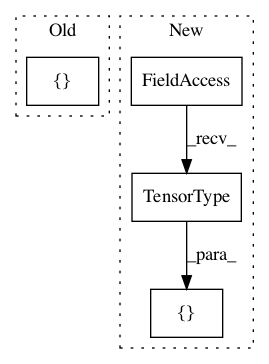

8f87f244813c98b98bbd379f973bdba0ed7a9c72,starry/_core/ops/integration.py,rTReflectedOp,make_node,#rTReflectedOp#,61
Before Change
def make_node(self, *inputs):
inputs = [tt.as_tensor_variable(i) for i in inputs]
outputs = [tt.TensorType(inputs[0].dtype, (False, False))()]
return gof.Apply(self, inputs, outputs)
def infer_shape(self, node, shapes):
return [shapes[0] + (tt.as_tensor(self.N),)]
After Change
def make_node(self, *inputs):
inputs = [tt.as_tensor_variable(i) for i in inputs]
outputs = [
tt.TensorType(inputs[-1].dtype, (False, False))(),
tt.TensorType(inputs[-1].dtype, (False, False))(),
tt.TensorType(inputs[-1].dtype, (False, False))(),
]
return gof.Apply(self, inputs, outputs)
def infer_shape(self, node, shapes):
return [
In pattern: SUPERPATTERN
Frequency: 3
Non-data size: 4
Instances
Project Name: rodluger/starry
Commit Name: 8f87f244813c98b98bbd379f973bdba0ed7a9c72
Time: 2020-04-30
Author: rodluger@gmail.com
File Name: starry/_core/ops/integration.py
Class Name: rTReflectedOp
Method Name: make_node
Project Name: rodluger/starry
Commit Name: f065b29cc8667c3012761b9509886411d8095e57
Time: 2020-03-25
Author: rodluger@gmail.com
File Name: starry/_core/ops/integration.py
Class Name: sTReflectedOp
Method Name: make_node
Project Name: rodluger/starry
Commit Name: 6da8e43b333cdca55b9db0cd0570e2e8d6723470
Time: 2019-05-15
Author: rodluger@gmail.com
File Name: starry/ops/dotRz.py
Class Name: dotRz
Method Name: make_node